Garthim is thrilled to present Gone Broody, a solo exhibition of new work by Chris Peckham and the artist's first exhibition with Garthim. The nomad builds a fort and searches for peace. Within a dwelling constructed from wooden limbs is a reprieve from all momentum. For this time, luminous rectangles inhabit the transient dweller as the structure forks upward in repose. We hope you enjoy the exhibition.
 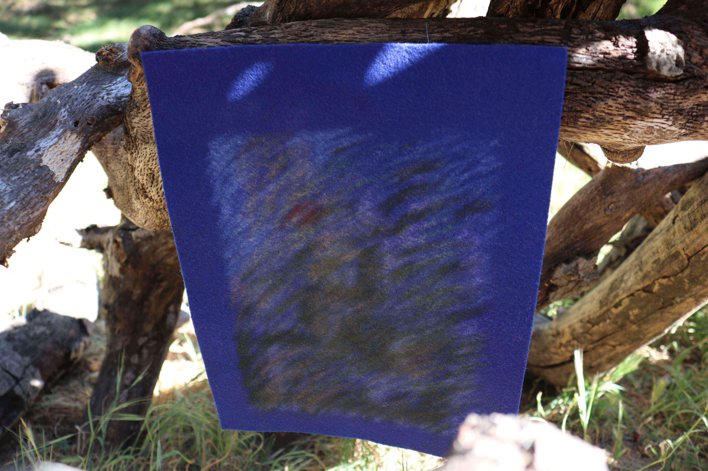
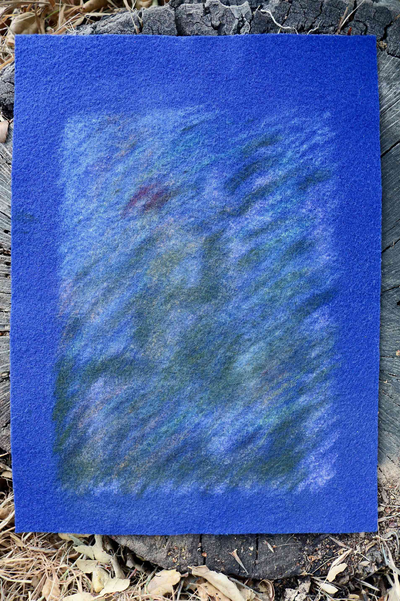
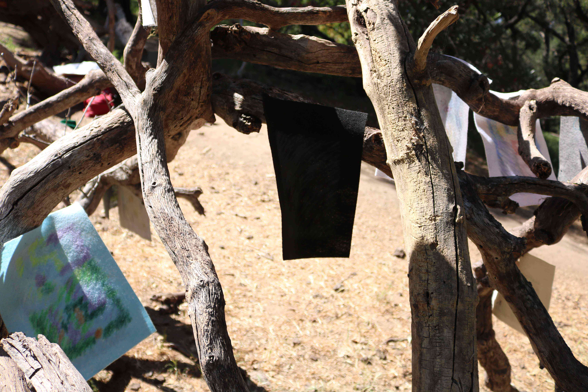
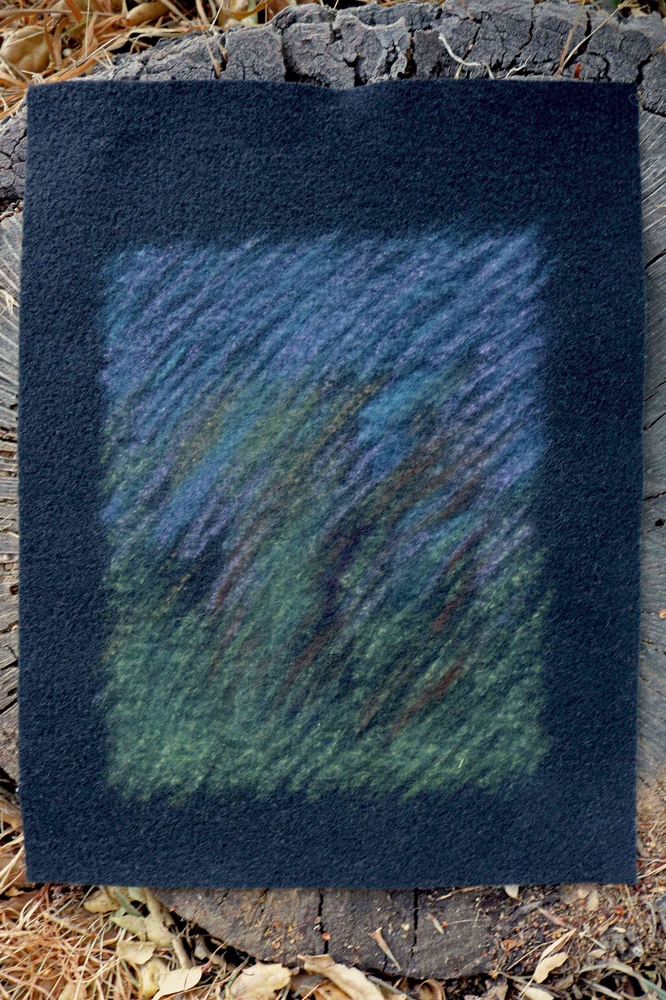
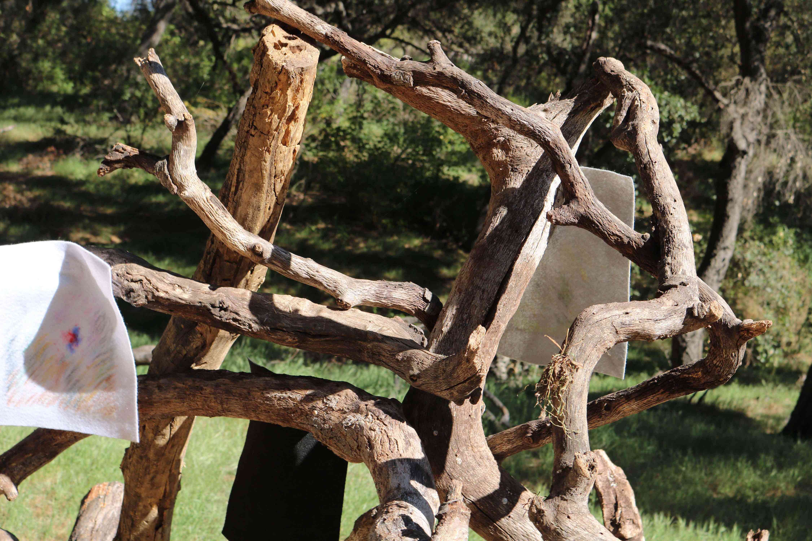
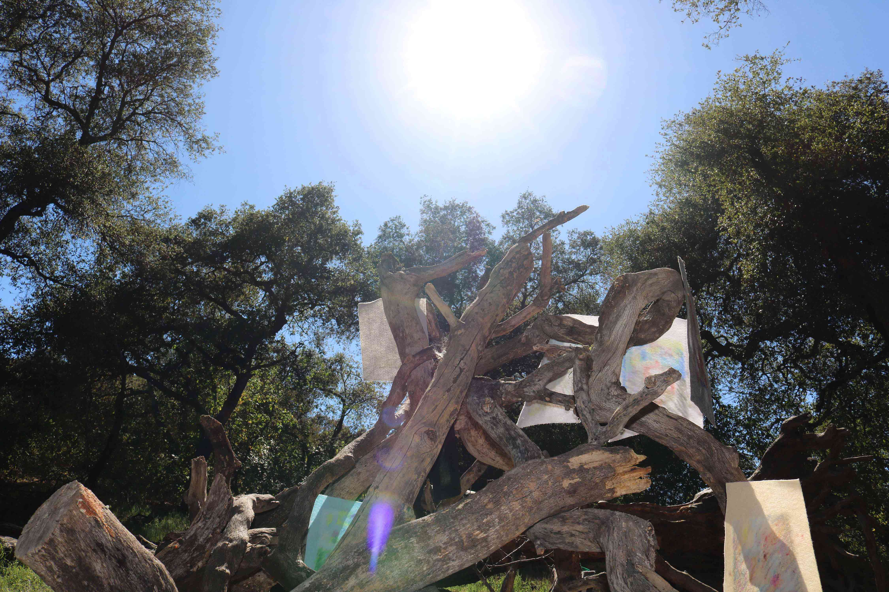
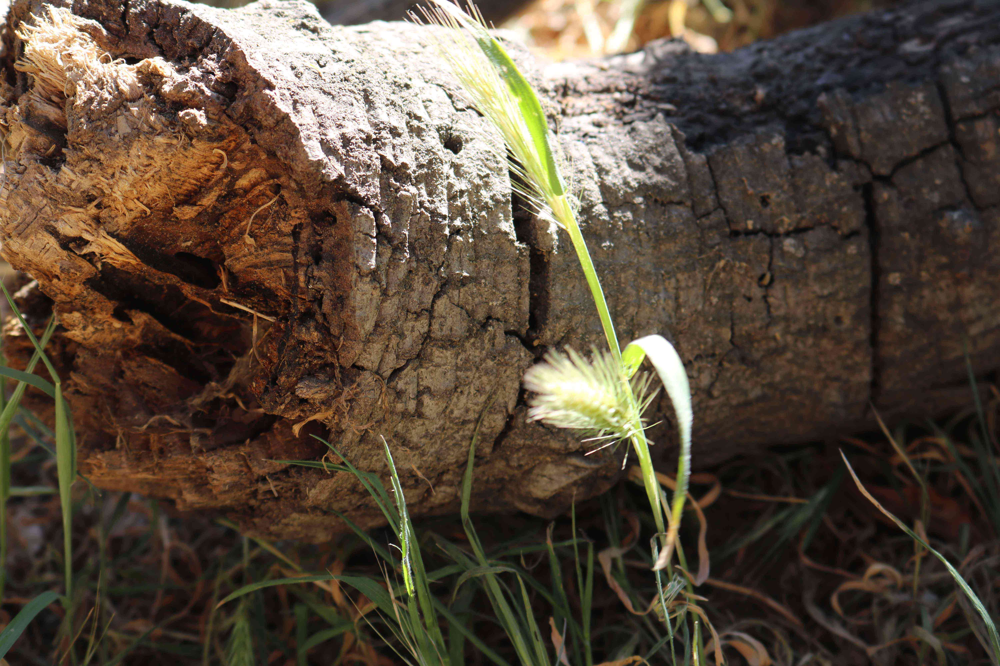
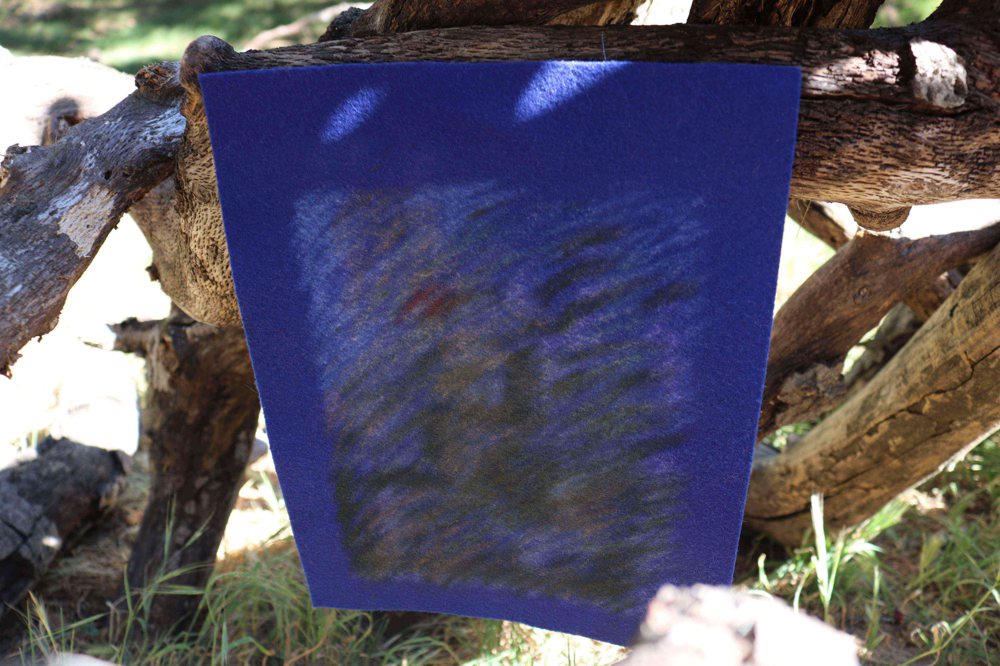
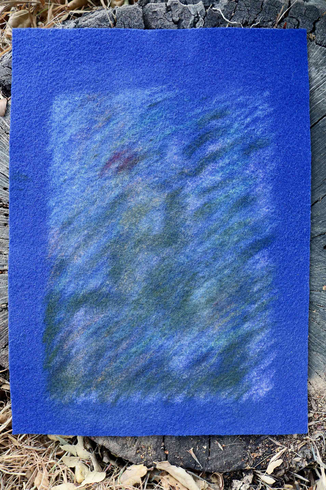
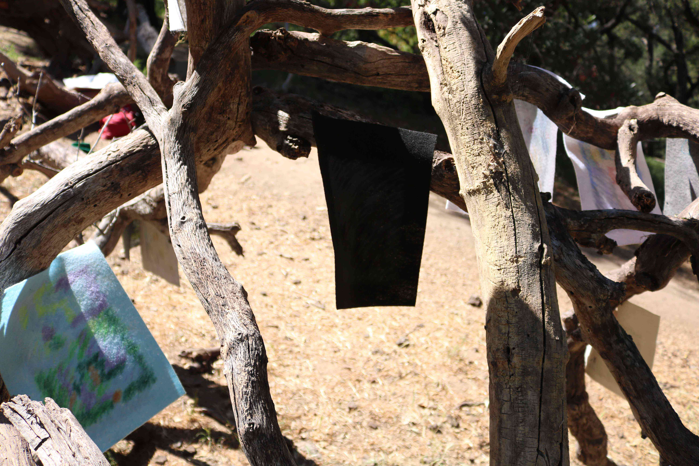
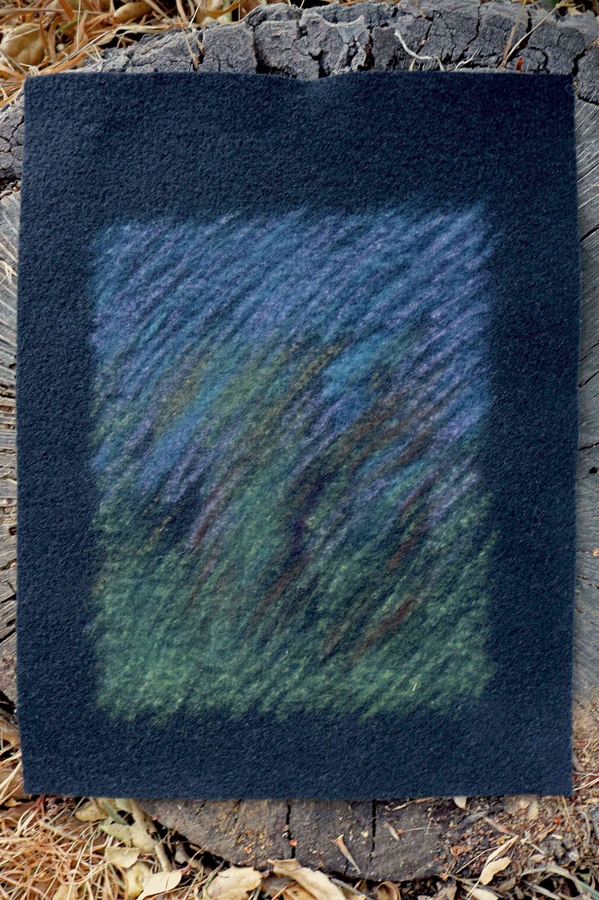
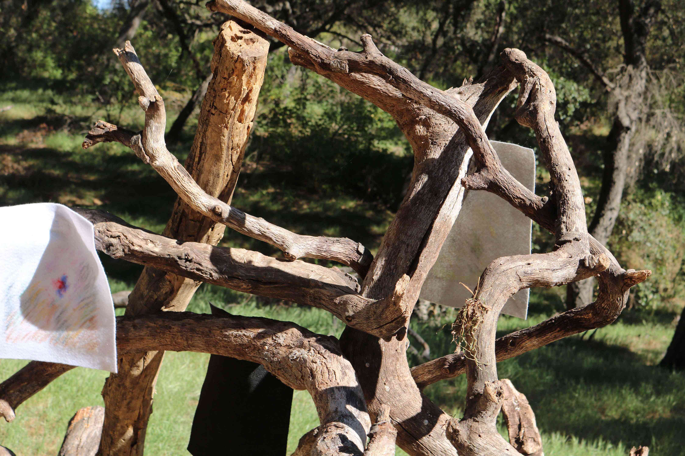
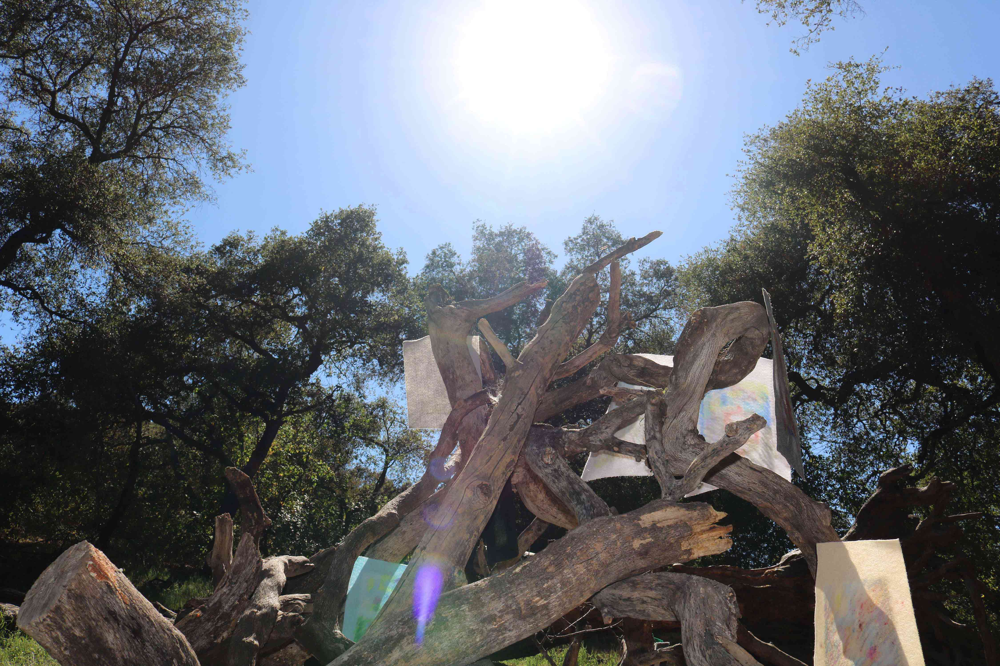
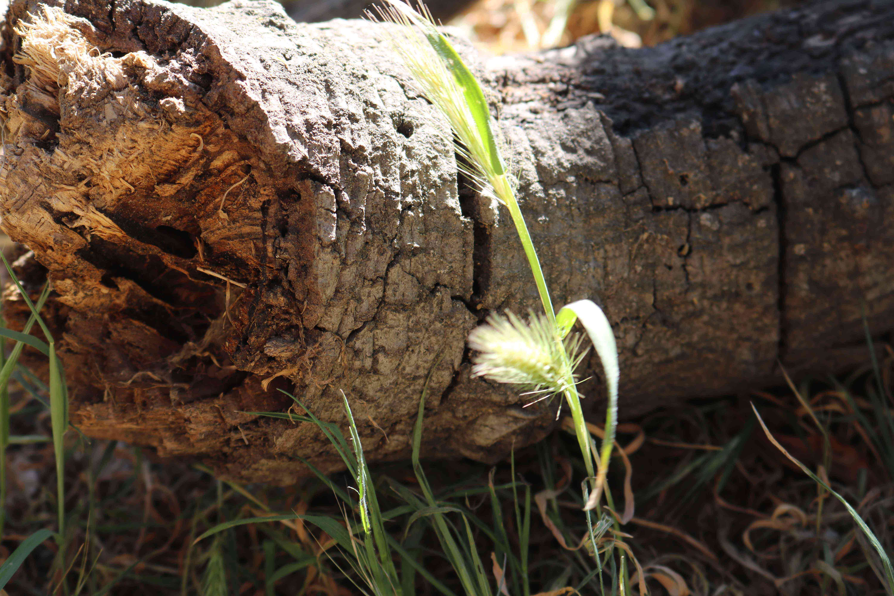
Photography by Justin Ortiz